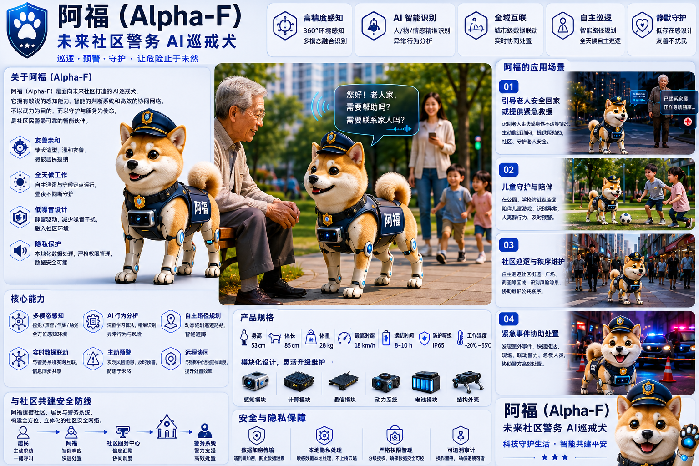

阿福（Alpha-F）未来社区警务 AI巡戒犬

设计初衷
随着人工智能、机器人和自动驾驶技术的飞速发展，人们开始重新构想未来社区安全体系的形态。
与传统科幻作品中冷酷、充满攻击性的“机械战犬”不同，阿福（Alpha-F）的设计初衷并不以武力为核心。它更像是一位永远在线的社区巡警助手，旨在辅助警务工作，而非取代警力，更不会替代人与人之间的信任与温情。
它的核心使命是：
🔍 在危险发生之前发现异常，
🤝 在需要帮助时及时出现，
🛡️ 在公共空间中默默守护社区。
产品定位
- 产品名称：阿福（Alpha-F）
- 产品身份：未来社区警务 AI 巡戒犬
- 应用场景：定位于社区、校园、公园、步行街等公共区域。
- 核心功能：具备自主巡逻、异常预警、紧急联动和社区便民服务能力。
- 设计原则：以“低存在感、低压迫感、高亲和力”为核心设计准则。
核心设计理念
为了让 AI 更好地服务于社区，阿福在设计上确立了三条明确的“边界”：
1. 辅助者，而非执法者
阿福不具备也不行使任何执法权。执法权力始终属于人类警察和相关管理机构。它的定位是警务工作延伸的“眼睛”和“耳朵”。
2. 守护者，而非武器
阿福不配备任何攻击性或杀伤性武器，其核心价值并不来自力量的震慑，而是来自以下四个维度：
- 发现：精准识别安全隐患与异常动态。
- 提醒：针对不安全行为进行温和的警示。
- 记录：为后续处理提供客观的数据支撑。
- 联动：第一时间与后台警务及救援力量无缝对接。
3. 互动节点，而非单纯的监视器
阿福并非冷冰冰的移动摄像头。它被赋予了智能且有人性温情的交互设计，更像是一个能够主动与居民沟通、提供服务的社区交互节点。
为什么是一只“柴犬”？
在产品的多轮概念迭代中，我们发现社区机器人面临的最大挑战往往不是运动控制或算法能力，而是社会接受度。
相比于冰冷、具有距离感的几何机械外观，柴犬的形象拥有天然的优势：
- 易于建立信任：柴犬亲和友善的面容能迅速拉近人机距离。
- 保护易感人群：更容易被老人和儿童接受，避免产生被监视的焦虑或恐慌感。
- 融入社区环境：像宠物狗一样自然地穿梭于社区中，成为日常风景的一部分。
因此，阿福最终确立了“呆萌外表 × 警务身份 × 智能服务”的独特路线，将技术隐藏在温和的外表之下。
典型应用场景
👴 老人守护
当系统检测到老人出现长时间原地徘徊、疑似迷路或跌倒等异常行为时，阿福会主动上前，通过温和的声音询问：“您好，我是社区助手阿福，请问您需要帮助吗？”在确认异常或未收到回应时，它将立即启动联动机制，联系家属或社区服务中心。
👶 儿童守护
在学校、公园和游戏区巡逻时，阿福能够精准识别儿童异常哭闹、迷路或身边无监护人陪同的潜在危险情况，主动介入并发出温和关怀，同时向值班保安或家长端推送警报。
🏘️ 社区巡逻
阿福会按照预设或算法优化的动态路线进行日常巡查。当发现井盖破损、电线裸露、车辆违停阻塞消防通道等公共设施损坏或安全隐患时，它会拍照并自动生成工单上报系统。
🚨 应急协助
在发生火灾、地震等突发事件时，阿福可作为第一响应节点：
- 引导疏散：利用身上配备的投影或语音指示，引导人群安全有序撤离。
- 信息传递：充当移动通信基站和信息广播站，播报官方最新指示。
- 资源联动：实时回传现场画面，协助后台调度警务与医疗资源。
静默威慑（Silent Presence）
阿福最核心的安全防卫能力并非源于直接的武力干预，而是一种由“秩序感”带来的静默威慑。
当居民和潜在的违法者知晓社区中始终有一套高效、可靠且无处不在的巡逻与响应系统在运转时，许多潜在的矛盾、冲突和安全隐患在萌芽阶段就会被自然化解。这种力量不依靠强力的对抗，而是依靠技术重塑社区秩序本身，营造一种无形却让人心安的“安全磁场”。
技术与伦理的边界
作为一款警务辅助工具，阿福并非万能。它无法全面评估所有人性与社会层面的复杂事件，更不能替代人类进行关键性的决策。
对于存在争议的复杂事件，阿福遵循明确的工作机制：
- AI 侧重于发现与提示：利用感知算法进行高效率的筛查。
- 人类主导判断与处理：最终的决策权、处置权始终掌握在人手中。
我们始终坚持：“AI 辅助，人类负责”的核心人机协作原则。
未来展望
在未来的十年里，真正重塑社区生活体验的，或许并不是破坏力更强或外形更炫酷的机器人，而是那些默默融入烟火气、能够与人类建立信任的智能伙伴。
如果有一天，一位在街角迷路的老人，能够毫无防备且放心地对迎面走来的阿福说：
“阿福，我找不到回家的路了。”
而阿福也能够安全、温暖地将老人护送回家。那一刻，这款产品的真正价值和设计目标就已经圆满实现了。
阿福（Alpha-F） 未来社区警务 AI 巡戒犬 巡逻 · 预警 · 守护 —— 让危险止于未然。